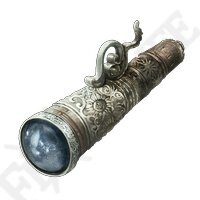

All The Items/Products available

Throwing Daggers
Short dagger for throwing. It has no hand guard. The blade is polished, and its weight is expertly balanced.
Item Type: Consumable
Purchase Value: ꋪ40

Telescope
This magical telescope will guide you yo your next site of grace and also mark your enemies for you.
Item Type: Consumable
Purchase Value: ꋪ500
Crafting Kit
Leather bag containing a pestle and mortar, small blade, and various other tools. Provides both means to fight and means to survive.
Item Type: Crafting
Purchase Value: ꋪ300
Torch
This torch's tip is wrapped in oil-soaked rags and set on fire. The flame can illuminate dark locales, or used to attack enemies.
Item Type: Armaments
Purchase Value: ꋪ200

Furlcalling Finger Remedy
This is the Furlcalling Finger Remedy. Used For summoning cooperator or adversary from another world in The Lands Between or The Lands of Shadows
Item Type: